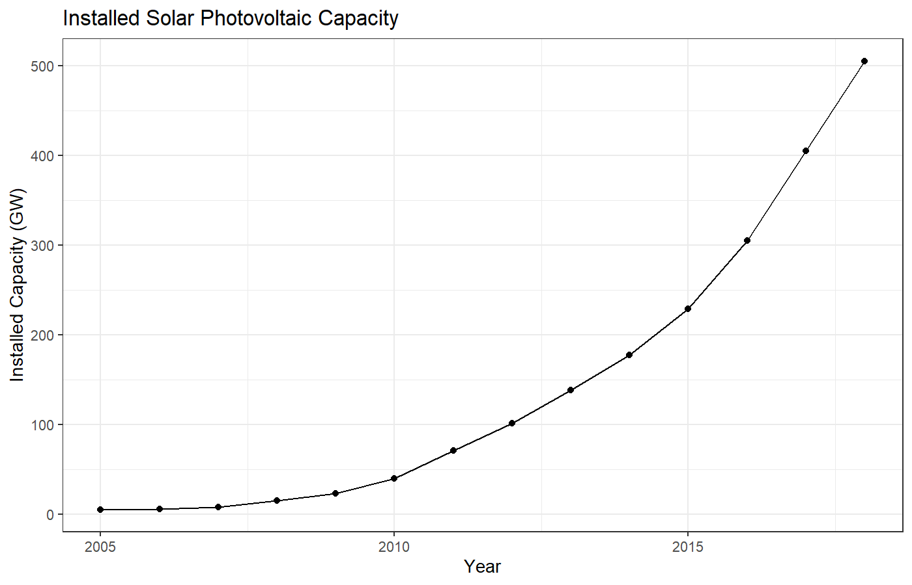
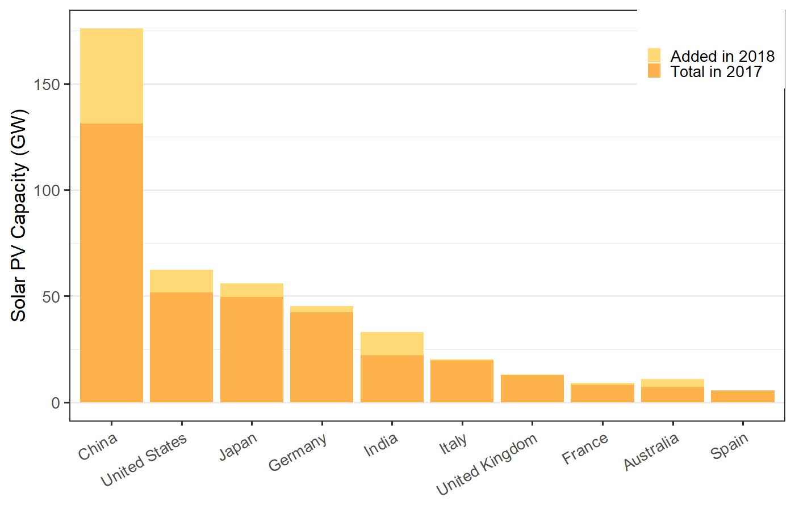
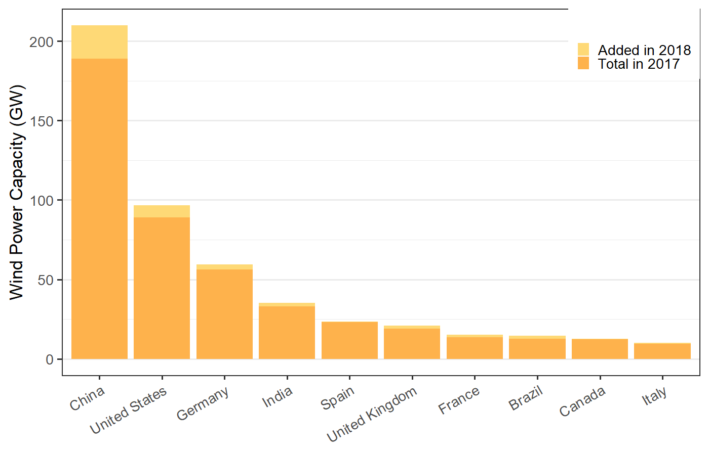
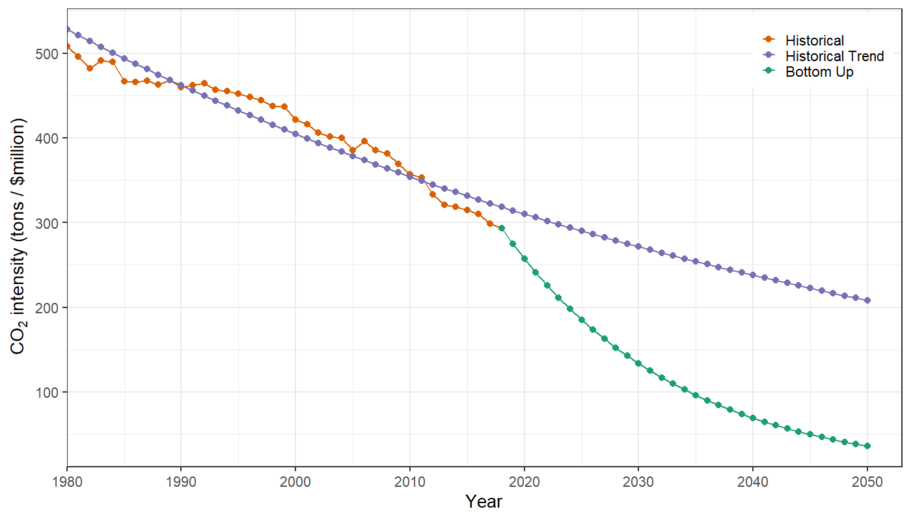
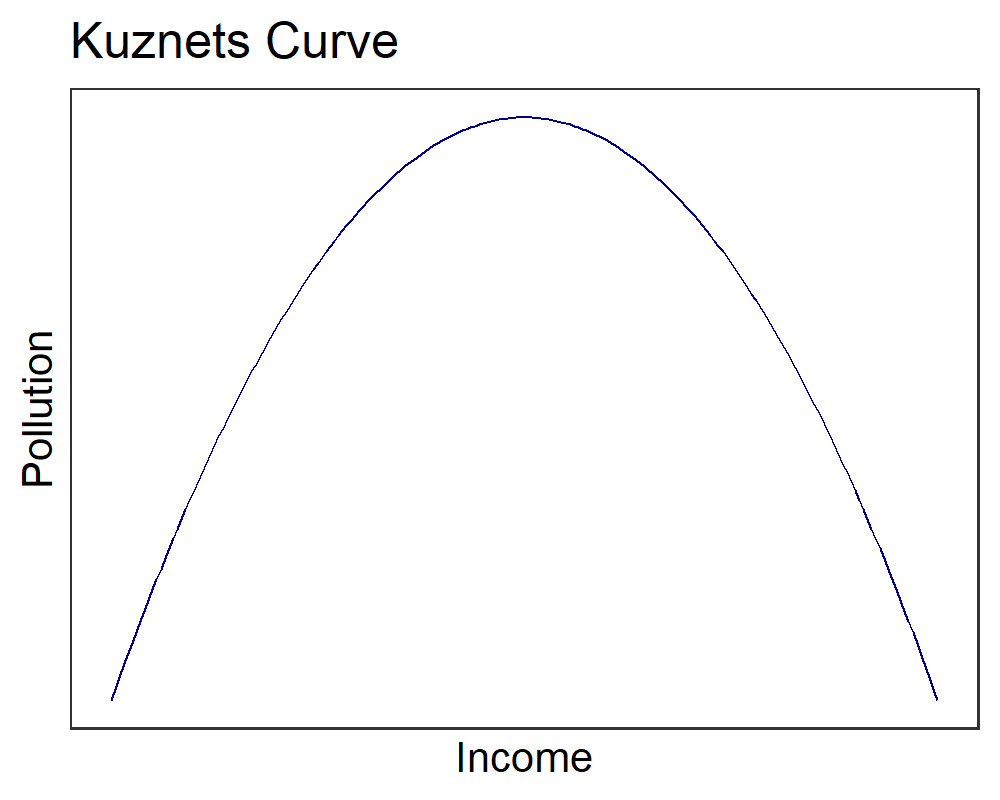

Reducing Carbon Emissions:
Bottom-Up Approaches
EES 3310/5310
Global Climate Change
Jonathan Gilligan
Class #26: Wednesday March 18 2020
Announcements
Announcements
- Revised lab project assignment posted
- Choices:
- Record and upload a video presentation
- 5–10 minutes per person
- Write a “press release” describing your project to the general public.
- 1–2 pages, double-spaced
- Record and upload a video presentation
- Both choices are due March 30
- Details posted on Piazza and class web site.
- Choices:
- Labs for the rest of the semester:
- Use Kaya Identity to analyze decarbonization policies.
- Zoom lab session on Monday
- Revised assignment will be posted later this week for you to read.
Challenges of Decarbonizing
Scale of Problem:
450 ppm target

Pielke’s Policy Criteria
- Policies should flow with public opinion
- Public will not tolerate significant short-term costs, even for big long-term benefits
- Policy must center on clean energy innovation
Solar Photovoltaic Power
Solar Energy over Time

Renewable Energy Parity Network for the 21st Century, Global Status Report 2019, http://www.ren21.net/status-of-renewables/global-status-report/
Top-10 Nations for Solar PV

Renewable Energy Parity Network for the 21st Century, Global Status Report 2019, http://www.ren21.net/status-of-renewables/global-status-report/
Wind Power
Wind Energy over Time

Renewable Energy Parity Network for the 21st Century, Global Status Report 2019, http://www.ren21.net/status-of-renewables/global-status-report/
Top-10 Nations for Wind

Renewable Energy Parity Network for the 21st Century, Global Status Report 2019, http://www.ren21.net/status-of-renewables/global-status-report/
Prospects for Future Renewable Energy
Solar PV

Current World Mix of Energy

Renewable Energy Parity Network for the 21st Century, Global Status Report 2019, http://www.ren21.net/status-of-renewables/global-status-report/
World Electricity Generation

Renewable Energy Parity Network for the 21st Century, Global Status Report 2019, http://www.ren21.net/status-of-renewables/global-status-report/
Decarbonizing the World
Implied Decarbonization:
- Goal:
- Reduce emissions to some percentage below a reference year, by a target year
- Example: Reduce emissions so F(2050) is 80% less than F(1990).
- Bottom-up procedure:
- Treat each Kaya identity factor separately: P, g, e, f.
- e.g., extrapolate each factor, based on historical rate of change
- Combine P and g to get G (GDP in target year)
- Treat each Kaya identity factor separately: P, g, e, f.
- Top-down procedure:
- Begin with integrated model of total GDP growth
- e.g., macroeconomic model that considers interactions between P, g, e, and f.
- Begin with integrated model of total GDP growth
Implied Decarbonization (Bottom Up)
We know F and G at the start.
We know the goal for F at the target date
We predict what P and g will be at the target date
-
Kaya Identity:
\[ \begin{align*} F &= P \times g \times e \times f \\ &= G \times ef \\ F/G &= ef \end{align*} \]
-
Change if \(F/G\) implies change in \(ef\): decarbonization.
- \(\Delta (F/G) = \Delta (ef)\)
Achieve decarbonization by some mix of energy efficiency (reduce e) and adoption of clean energy (reduce f).
Implied Decarbonization (Top Down)
- We know F and E at the start.
- We know the goal for F at the target date
- We predict what energy consumption E will be at the target date
- Kaya Identity: \[ \begin{align*} F &= E \times f \\ F/E &= f \end{align*} \]
- Change if \(F/E\) implies change in \(f\): decarbonization.
- \(\Delta (F/E) = \Delta (f)\)
- Achieve decarbonization by adopting clean energy (reduce f).
Worked Example: UK
UK Climate Change Act (2008)
- Reduce greenhouse gas emissions so
F in 2050 is 80% lower than in 1990: \[ F(2050) = 0.20\: F(1990) \] - How hard will it be to achieve this goal?
Bottom-Up Analysis
- Begin by figuring historical rates of change
for \(P\), \(g\), \(e\), and \(f\). - Estimate historical growth rate for \(P \times g\).
- Calculate implied rate of change for \(e \times f\).
- Compare implied rate of change for \(ef\) to historical rate of change.
- Use on-line web application to calculate
rates of change. https://ees3310.jgilligan.org/decarbonization/- R package
kayadata:install.packages("kayadata")
- R package
Bottom-Up Analysis
Bottom-Up Analysis
- GDP(2018) = $2.88 billion
- Emissions intensity ef(2018) = 137 tons per $1000
- Business as usual:
- If growth follows historical trends
Population P grows at 0.44%,
per-capita GDP g grows at 1.92%,
-
GDP grows at 0.44% + 1.92% = 2.37%
\(\displaystyle \begin{aligned} GDP(2050) &= GDP(2018) \times \exp(0.0237 \times (2050 - 2018))\\ &= \$2.88~\text{trillion} \times \exp(0.0237 \times 32)\\ &= \$6.14~{\text{trillion}} \end{aligned}\)
- If growth follows historical trends
Bottom-Up Analysis
- F(2018) = 394 million tons CO2.
- F(1990) = 593 million tons CO2.
- Goal: Emissions in 2050 are 80% less than in 1990:
\(F(2050) = 0.20\: F(1990) = 0.20 \times 593~\text{MMT} = 119~\text{MMT}\)
-
Implied growth rate of \(F\):
\(\displaystyle \begin{aligned} r_F &= \ln(F(2050) / F(2018)) / 32~\text{years} \\ &= \ln(119 / 394) / 32 \\ &= -3.75\%. \end{aligned}\)
Implied decarbonization rates:
- GDP (\(P \times g\)) grows at 2.37%
- Implied growth rate of F: \(r_F = -3.75\%\).
- Implied growth rate of ef (carbon intensity of the economy):
\(F = Pgef\), so
-
\(r_F = r_{Pg} + r_{ef} = r_G + r_{ef}\)
\(\displaystyle \begin{aligned} r_{ef} &= r_F - r_G \\ &= -3.75\% - 2.37\%\\ &= -6.12\% \end{aligned}\)
- The implied \(r_{ef} = -6.12\%\)
- The historical \(r_{ef} = -3.09\%\)
- To meet the goal, the UK would have to decarbonize 2.0 times faster than it did for the previous several decades.
- However, since 2010, decarbonization has accelerated!
Implied decarbonization for UK

Implied Decarbonization
for Australia
Australia’s
Emissions Trading Scheme
- PM Kevin Rudd calls for cutting emissions 60% below 2000 levels by 2050
- \(F(2050) = 0.40\: F(2000) = 0.40 \times 358~\text{MMT} = 143~\text{MMT}\)
Implied Decarbonization for Australia
- Historical decarbonization rate: \(r_{ef} = -1.33\%\)
- Implied decarbonization rate: \(r_{ef} = -6.56\%\)

Other Considerations
Kuznets curve

Concluding Remarks
- Implied \(ef\) depends on prediction of \(\text{GDP} = G = P \times g\).
- Predicting population and economic growth are very tricky and imprecise.
- So take any of these calculations with a grain of salt.
- But are they still useful, despite the uncertainties?